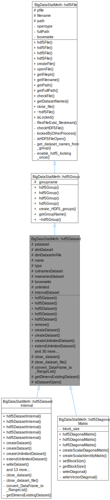

hdf5Dataset
C++ Class Reference
1 Overview
Structure for string data.
2 Detailed Description
Used for storing fixed-length string data in HDF5
3 Class Hierarchy

4 Inheritance
Inherits from:
- BigDataStatMeth::hdf5Group
5 Public Interface
5.1 Methods
5.1.1 hdf5Dataset()
BigDataStatMeth::hdf5Dataset::hdf5Dataset(std::string filename, std::string group, std::string datasetname, bool overwrite)Parameters:
filename(std::string)group(std::string)datasetname(std::string)overwrite(bool)
5.1.2 remove()
virtual void BigDataStatMeth::hdf5Dataset::remove()Remove the dataset.
Deletes the dataset from the HDF5 file
5.1.3 createDataset()
virtual void BigDataStatMeth::hdf5Dataset::createDataset(BigDataStatMeth::hdf5Dataset *dsLike, std::string strdatatype, int compression_level=6)Create a dataset based on another dataset’s dimensions with optional compression.
Parameters:
dsLike(BigDataStatMeth::hdf5Dataset *): Reference dataset to copy dimensions fromstrdatatype(std::string): Data type for the new dataset (“int”, “numeric”, “real”, “string”)compression_level(int): Compression level (0=none, 1-9=gzip level, 6=balanced default) 0 = No compression 1-3 = Light compression (fast) 4-6 = Balanced compression (recommended) 7-9 = Maximum compression (slower)
Creates a new dataset with the same dimensions as the reference dataset but with a specified data type and compression settings. This is useful for creating derived datasets or transformations while maintaining dimensional consistency.
5.1.4 createUnlimitedDataset()
virtual void BigDataStatMeth::hdf5Dataset::createUnlimitedDataset(size_t rows, size_t cols, std::string strdatatype, int compression_level=6)Create an unlimited dataset with optional compression.
Parameters:
rows(size_t): Initial number of rows (used as chunk size)cols(size_t): Initial number of columns (used as chunk size)strdatatype(std::string): Data type for the dataset (“int”, “numeric”) Note: String type not supported for unlimited datasetscompression_level(int): Compression level (0=none, 1-9=gzip level, 6=balanced default) Recommended: 4-6 for unlimited datasets to balance compression ratio with extension performance
Creates a new HDF5 dataset with unlimited dimensions, allowing it to grow in size dynamically. The dataset is created with initial dimensions but can be extended using extendUnlimitedDataset(). Compression is fully compatible with unlimited datasets.
5.1.5 extendUnlimitedDataset()
virtual void BigDataStatMeth::hdf5Dataset::extendUnlimitedDataset(const size_t rows, const size_t cols)Extend an unlimited dataset.
Parameters:
rows(const size_t): New number of rowscols(const size_t): New number of columns
Increases the dimensions of an unlimited dataset to accommodate more data. Only works with datasets created as unlimited.
5.1.6 openDataset()
H5::DataSet * BigDataStatMeth::hdf5Dataset::openDataset()5.1.7 writeDataset()
void BigDataStatMeth::hdf5Dataset::writeDataset(double *mdata)Write raw double data to dataset.
Parameters:
mdata(double *): Pointer to double array
Direct write of double array to dataset without type conversion.
5.1.8 writeRowMajorDatasetBlock()
virtual void BigDataStatMeth::hdf5Dataset::writeRowMajorDatasetBlock(Eigen::Map< Eigen::Matrix< double, Eigen::Dynamic, Eigen::Dynamic, Eigen::RowMajor > > DatasetValues, std::vector< hsize_t > vOffset, std::vector< hsize_t > vCount, std::vector< hsize_t > vStride, std::vector< hsize_t > vBlock)Write block of data in row-major order.
Parameters:
DatasetValues(Eigen::Map< Eigen::Matrix< double, Eigen::Dynamic, Eigen::Dynamic, Eigen::RowMajor > >): Matrix data in row-major formatvOffset(std::vector< hsize_t >): Starting position for writevCount(std::vector< hsize_t >): Number of elements to writevStride(std::vector< hsize_t >): Stride between elementsvBlock(std::vector< hsize_t >): Size of blocks
Writes a block of data to the dataset using row-major memory layout. Supports:Partial dataset updatesStrided accessBlock-based operations
5.1.9 writeColMajorDatasetBlock()
virtual void BigDataStatMeth::hdf5Dataset::writeColMajorDatasetBlock(Eigen::MatrixXd DatasetValues, std::vector< hsize_t > vOffset, std::vector< hsize_t > vStride, std::vector< hsize_t > vBlock)Write block of data in column-major order.
Parameters:
DatasetValues(Eigen::MatrixXd): Matrix data in column-major formatvOffset(std::vector< hsize_t >): Starting position for writevStride(std::vector< hsize_t >): Stride between elementsvBlock(std::vector< hsize_t >): Size of blocks
Writes a block of data to the dataset using column-major memory layout. Supports:Partial dataset updatesStrided accessBlock-based operations
5.1.10 writeDatasetBlock()
virtual void BigDataStatMeth::hdf5Dataset::writeDatasetBlock(std::vector< double > DatasetValues, std::vector< hsize_t > vOffset, std::vector< hsize_t > vCount, std::vector< hsize_t > vStride, std::vector< hsize_t > vBlock)Write block of vector data.
Parameters:
DatasetValues(std::vector< double >): Vector data to writevOffset(std::vector< hsize_t >): Starting positionvCount(std::vector< hsize_t >): Number of elementsvStride(std::vector< hsize_t >): Stride between elementsvBlock(std::vector< hsize_t >): Block size
Writes a block of vector data to the dataset. Useful for column/row-wise operations.
5.1.11 createSubsetDataset()
virtual void BigDataStatMeth::hdf5Dataset::createSubsetDataset(const std::vector< int > &indices, bool select_rows=true, const std::string &new_group="", const std::string &new_name="")Create subset dataset with selected rows/columns (memory efficient)
Parameters:
indices(const std::vector< int > &): Vector of row/column indices to include (0-based)select_rows(bool): If true, selects rows; if false, selects columnsnew_group(const std::string &): Target group for the new dataset (default: same group)new_name(const std::string &): Name for the new dataset (default: original_name + “_subset”)
Creates a new dataset containing only the specified rows or columns using HDF5’s hyperslab selection for direct disk-to-disk copy without loading data into memory. Ideal for big datasets.
5.1.12 readDatasetBlock()
void BigDataStatMeth::hdf5Dataset::readDatasetBlock(std::vector< hsize_t > ivoffset, std::vector< hsize_t > ivcount, std::vector< hsize_t > ivstride, std::vector< hsize_t > ivblock, double *rdatablock)Parameters:
ivoffset(std::vector< hsize_t >)ivcount(std::vector< hsize_t >)ivstride(std::vector< hsize_t >)ivblock(std::vector< hsize_t >)rdatablock(double *)
5.1.13 addAttribute()
int BigDataStatMeth::hdf5Dataset::addAttribute(std::string attrName, Rcpp::RObject attr_data)Add an attribute to the dataset.
Parameters:
attrName(std::string): Name of the attributeattr_data(Rcpp::RObject): Attribute data
Returns: EXEC_OK on success, EXEC_ERROR on failure
Adds or updates an attribute associated with the dataset. Supports various R data types.
5.1.14 getAttribute()
void BigDataStatMeth::hdf5Dataset::getAttribute(std::string strAtribute)Get an attribute from the dataset.
Parameters:
strAtribute(std::string): Name of the attribute to retrieve
Retrieves the value of a named attribute from the dataset.
5.1.15 moveDataset()
virtual void BigDataStatMeth::hdf5Dataset::moveDataset(const std::string &new_path, bool overwrite=false)Parameters:
new_path(const std::string &)overwrite(bool)
5.1.16 getDatasetptr()
H5::DataSet * BigDataStatMeth::hdf5Dataset::getDatasetptr()Get dataset pointer.
Returns: Pointer of the dataset
Pointer of the dataset
5.1.17 getDatasetName()
std::string BigDataStatMeth::hdf5Dataset::getDatasetName()Get dataset name.
Returns: Name of the dataset
Name of the dataset
5.1.18 getGroup()
std::string BigDataStatMeth::hdf5Dataset::getGroup()Get group name.
Returns: Name of the group containing the dataset
Name of the group containing the dataset
5.1.19 getFileName()
std::string BigDataStatMeth::hdf5Dataset::getFileName()Get file name.
Returns: Name of the file containing the dataset
Name of the file containing the dataset
5.1.20 nrows()
hsize_t BigDataStatMeth::hdf5Dataset::nrows()Get number of rows in internal format.
Returns: Number of rows in the dataset’s internal storage
Number of rows in the dataset’s internal storage
5.1.21 ncols()
hsize_t BigDataStatMeth::hdf5Dataset::ncols()Get number of columns in internal format.
Returns: Number of columns in the dataset’s internal storage
Number of columns in the dataset’s internal storage
5.1.22 nrows_r()
hsize_t BigDataStatMeth::hdf5Dataset::nrows_r()Get number of rows in R format.
Returns: Number of rows in R’s representation (transposed)
Number of rows in R’s representation (transposed)
5.1.23 ncols_r()
hsize_t BigDataStatMeth::hdf5Dataset::ncols_r()Get number of columns in R format.
Returns: Number of columns in R’s representation (transposed)
Number of columns in R’s representation (transposed)
5.1.24 dim()
hsize_t * BigDataStatMeth::hdf5Dataset::dim()Get dataset dimension.
Returns: Pointer to dataset dimension (rows x columns)
Pointer to dataset dimension (rows x columns)
5.1.25 dimFile()
hsize_t * BigDataStatMeth::hdf5Dataset::dimFile()Get dataset file dimension.
Returns: Pointer to dataset file dimension (rows x columns)
Pointer to dataset file dimension (rows x columns)
5.1.26 nrows_file()
hsize_t BigDataStatMeth::hdf5Dataset::nrows_file()Get number of rows in file.
Returns: Number of rows in file storage
Number of rows in file storage
5.1.27 ncols_file()
hsize_t BigDataStatMeth::hdf5Dataset::ncols_file()Get number of columns in file.
Returns: Number of columns in file storage
Number of columns in file storage
5.1.28 isUnlimited()
bool BigDataStatMeth::hdf5Dataset::isUnlimited()Check if dataset is unlimited.
Returns: True if dataset has unlimited dimensions
True if dataset has unlimited dimensions
5.1.29 isInternal()
bool BigDataStatMeth::hdf5Dataset::isInternal()Check if dataset is internal.
Returns: True if dataset is used for internal storage
True if dataset is used for internal storage
5.1.30 isOpen()
bool BigDataStatMeth::hdf5Dataset::isOpen()Check if dataset is open.
Returns: True if dataset is currently open
True if dataset is currently open
5.1.31 setRownamesDatasetPath()
void BigDataStatMeth::hdf5Dataset::setRownamesDatasetPath(std::string fullpath)Set rownames path inside hdf5 data file.
Parameters:
fullpath(std::string)
Returns: void
void
5.1.32 setColnamesDatasetPath()
void BigDataStatMeth::hdf5Dataset::setColnamesDatasetPath(std::string fullpath)Set colnames path inside hdf5 data file.
Parameters:
fullpath(std::string)
Returns: void
void
5.1.33 ~hdf5Dataset()
virtual BigDataStatMeth::hdf5Dataset::~hdf5Dataset() noexceptDestructor.
Closes the dataset and releases resources
6 Protected Members
6.1 Methods
6.1.1 close_dataset()
void BigDataStatMeth::hdf5Dataset::close_dataset()Close the dataset.
Closes the dataset and releases associated resources
6.1.2 close_dataset_file()
void BigDataStatMeth::hdf5Dataset::close_dataset_file()Close dataset and file.
Closes both the dataset and its associated file
6.1.3 convert_DataFrame_to_RangeList()
names * BigDataStatMeth::hdf5Dataset::convert_DataFrame_to_RangeList(Rcpp::RObject DatasetValues, bool bFullDataset)Convert DataFrame to range list.
Parameters:
DatasetValues(Rcpp::RObject): R DataFrame to convertbFullDataset(bool): Whether to convert entire dataset
Returns: Array of name structures
Converts R DataFrame to HDF5-compatible range list format
6.1.4 getDimensExistingDataset()
void BigDataStatMeth::hdf5Dataset::getDimensExistingDataset()Get dimensions of existing dataset.
Retrieves and stores the dimensions of an existing dataset
6.1.5 isDatasetOpen()
bool BigDataStatMeth::hdf5Dataset::isDatasetOpen()Check if dataset is open.
Returns: True if dataset is open, false otherwise
Verifies if the dataset is currently open and accessible
6.2 Attributes
6.2.1 pdataset
Type: H5::DataSet *
Dataset pointer.
6.2.2 dimDataset
Type: hsize_t
Dataset dimensions.
6.2.3 dimDatasetinFile
Type: hsize_t
File storage dimensions.
6.2.4 name
Type: std::string
Dataset name.
6.2.5 type
Type: std::string
Dataset type.
6.2.6 colnamesDataset
Type: std::string
Column names dataset.
6.2.7 rownamesDataset
Type: std::string
Row names dataset.
6.2.8 boverwrite
Type: bool
Overwrite flag.
6.2.9 unlimited
Type: bool
Unlimited dimensions flag.
6.2.10 internalDataset
Type: bool
Internal dataset flag.
7 Usage Example
#include "hdf5Dataset.hpp"
// Example usage
hdf5Dataset obj;
// Your code here